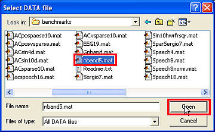
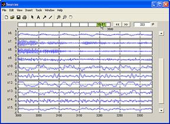
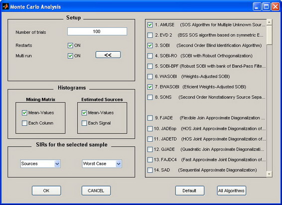
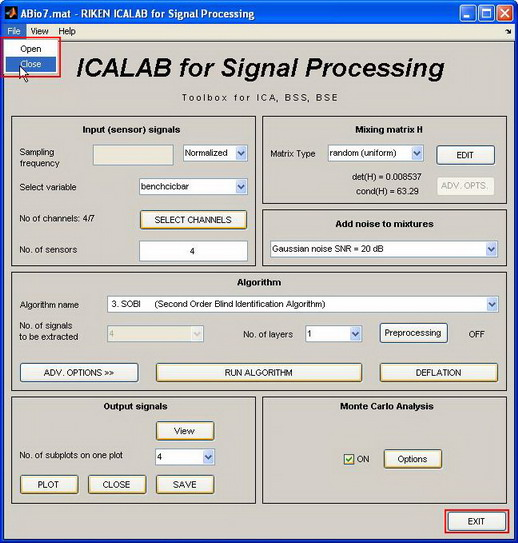

ICALAB for Signal
Processing
|
|
Toolbox for BSS, ICA
(version 3)
The ICALAB Package:
- for Signal Processing
has been developed, designed and implemented by:
Andrzej Cichocki, Shun-ichi Amari, Krzysztof Siwek,
Toshihisa Tanaka, Anh Huy Phan, Rafal Zdunek,
Sergio Cruces,
Pando Georgiev, Zbigniew Leonowicz, Hovagim Bakardjian, Yoshikazu
Washizawa, Tomasz Rutkowski, Seungjin Choi, Adel Belouchrani, Allan Barros,
Ruck Thawonmas, Tetsuya Hoya, Wakako Hashimoto, Yasushi Terazono and Tomomi
Watanabe in cooperation with other members of the Laboratory for Advanced Brain Signal
Processing.
The graphic
design, data visualization, user interface, extensive testing and integration
of new
Anh Huy Phan and Andrzej Cichocki,
with cooperation of many researchers world-wide,
especially:
Petr Tichavsky, Zbynek Koldovsky, Xi-Lin Li, Shuxue Ding,
Zhi-Lin Zhang, Jonathon Chambers
…
The current version 3, as of March 28, 2007 includes only
Second Order Statistics (SOS) Blind Sources Separation (BSS) algorithms.
In the near future we plan to include other kind of algorithms such as SCA, MCA, NTC, NMF for both overdetermined and underdetermined (overcomplete) cases.
MATLAB® is a registered
trademark of The MathWorks, Inc.
A similar package has been developed for ICALAB for Image Processing.
See also NMFLAB and NTFLAB developed by A. Cichocki and R. Zdunek
The comprehensive reference for these toolboxes is in the following book:
The reference for this toolboxes is as follows:
A. Cichocki, S, Amari, K, Siwek, T. Tanaka, Anh Huy Phan, R. Zdunek,
ICALAB – MATLAB Toolbox Ver. 3 for signal processing
The general concept of ICALAB
The important and unique features of our ICALAB toolboxes are preprocessing,
post-processing tools (see Fig. 1 a) and
Fig. 1 a Conceptual model of ICALAB Toolbox.
Actual optional PREPROCESSING tools include: Principal Component Analysis (PCA), prewhitening, filtering: High Pass Filtering (HPF), Low Pass Filtering (LPF), Sub-band filters (Butterworth, Chebyshev, Elliptic) with adjustable order of filters, frequency sub-bands and the number of subbands) or user-defined preprocessing functions.
POSTPROCESSING tools actually includes: Ranking or ordering the components according to various criteria, Deflation and Reconstruction ("cleaning") of original raw data by removing undesirable components, noise or artifacts.
SATISTICAL ANALYSIS and evaluating of performance and consistency, especially sophisticated Monte-Carlo (MC) Analysis.
Moreover, the ICALAB Toolboxes have flexible and extendable structure with the possibility to extend the toolbox by the users by adding their own algorithms.
The algorithms can perform not only ICA but also Second Order Statistics Blind Source Separation (BSS), and in the near future Sparse Component Analysis (SCA), Nonnegative Matrix Factorization (NMF), Smooth Component Analysis (SmoCA), Factor Analysis (FA) and any other possible matrix factorization of the form X=HS+N or Y=WX, where H=W+ is a mixing matrix or a matrix of basis vectors. X is a matrix of the observed data, S is a matrix of original sources and N represents the matrix of additional noise.
The ICA/BSS algorithms are pure mathematical formulas, powerful, but rather mechanical procedures: There is not very much left for the user to do after the machinery has been optimally implemented. The successful and efficient use of the ICALAB strongly depends on a priori knowledge, common sense and appropriate use of the preprocessing and postprocessing tools. In other words, it is preprocessing of data and postprocessing of models where expertise is truly needed (see the book).
The assumed linear mixing models must be valid at least approximately and original sources signals should have specified statistical properties.
The package contains a collection of algorithms for whitening, robust
orthogonalization,
ICALAB can be useful in the following tasks:
1. Blind Source Separation (BSS), Sequential Blind Sources Extraction (BSE),
2. Reduction of redundancy (Book, Chapter 3),
3. Decomposition of multi-variable signals into independent components (Chapters 6-8),
4. Spatio-temporal decorrelation of correlated signals (Chapter 4),
5. Extraction and removal of undesirable artifacts and interference by applying deflation (see Chapters 1 and 4),
6. Removal of noise or "cleaning" the raw sensor data,
7. Extraction of features and patterns,
8. Comparison of the performance of various algorithms for Independent Component Analysis (ICA) and Blind Source Separation (BSS),
9.
Several benchmarks are included to illustrate the performance of the various algorithms for a selection of synthetic and real world signals (see Benchmarks).
Limitations of version 3
The Version 3 of the package is limited to 160 channels. Higher number of channels may be useful for high density array processing in biomedical signal processing and in multivariate time series analysis (available on request). Also the number of integrated algorithms is limited to relatively fast and efficient algorithms.
DISCLAIMER
NEITHER THE AUTHORS NOR THEIR EMPLOYERS ACCEPT ANY RESPONSIBILITY OR LIABILITY FOR LOSS OR DAMAGE OCCASIONED TO ANY PERSON OR PROPERTY THROUGH USING SOFTWARE, MATERIALS, INSTRUCTIONS, METHODS OR IDEAS CONTAINED HEREIN, OR ACTING OR REFRAINING FROM ACTING AS A RESULT OF SUCH USE. THE AUTHORS EXPRESSLY DISCLAIM ALL IMPLIED WARRANTIES, INCLUDING MERCHANTABILITY OR FITNESS FOR ANY PARTICULAR PURPOSE. THERE WILL BE NO DUTY ON THE AUTHORS TO CORRECT ANY ERRORS OR DEFECTS IN THE SOFTWARE. THIS SOFTWARE AND THE DOCUMENTATIONS ARE THE PROPERTY OF THE AUTHORS AND SHOULD BE ONLY USED FOR SCIENTIFIC AND EDUCATIONAL PURPOSES. ALL SOFTWARE IS PROVIDED FREE AND IT IS NOT SUPPORTED. THE AUTHORS ARE, HOWEVER, HAPPY TO RECEIVE COMMENTS, CRITICISM AND SUGGESTIONS ADDRESSED TO icalab@bsp.brain.riken.go.jp
User guide
Starting ICALAB
To start ICALAB for Signal Processing type:
icalab
in the MATLAB command window (Note: this package runs on MATLAB 5.3 or higher).
ICALAB for Signal Processing was developed under MATLAB version 7.1 and tested under MATLAB versions: 7.0, 7.1 and 7.2. (Note: Previous versions (i.e. 6.5) may not work properly due to some unsupported graphics functions.)
Loading the processing data
To load new signals or data for further processing:
1. Click on the File in the menu bar. It contains Open item. Both HELP and EXIT buttons in the main window will become active after loading of the data file.
Fig. 1
Initial window after starting the program ICALAB. Please click on the File
| Open menu to load your data which can be in MATLAB format (*.mat), ASCI
format (*.txt and *.dat) or Excel formats (*.xls and *.csv).
(Press on image to enlarge).
2. You can load the data (our benchmarks or your own data) stored in the MATLAB (*.mat files), ASCI (*.txt and *.dat files) or Excel (*.xls, *.csv) format.
The signals must be stored in a 2-dimensional matrix inside the corresponding files:
o the number of rows corresponds to the number of sensors (the number of observations)
o the number of columns corresponds to the length of the signals, i.e., number of samples.
The loaded Matlab files can contain one or more data matrices. The user can choose any one of the matrix data. However, data loaded in ASCII or Excel format should contain only one data file. There is no limit to the length of the signals (number of samples), but in the version 3 available on the web, only a maximum of 160 signals (time series) can be loaded and processed.
Usually, the convergence speed of the algorithms in this package strongly depends on the dimension of signals (i.e., the number of observations and the number of samples) and the computer resources, e.g., available memory or processor speed. In the case of processing of large files, we recommend that you increase the swap space on the hard disk.

Fig. 2 Window illustrating how to load a benchmark or your data. After selecting the desired data file, click on the Open button.
3. You can optionally discard some signals and select an arbitrary time window using the Select channels window. Click on the SELECT CHANNELS button.
Fig. 3
Window after loading of the data. It is possible to input the sampling
frequency of the data to obtain the axis of the plots in time units or leave it
empty to use normalized units. If your MATLAB data
consist of several matrices click on Select variable popup menu to
choose desired data. Click optionally on SELECT CHANNELS in order to
choose the time window (the number of samples) and desired signals or directly
on Algorithm to select one of the algorithms (beginners could start
with AMUSE and SANG algorithms). In order to achieve
a fast convergence it is recommended to process less than 10.000 samples at a
time.
The Select channels window will appear. This window allows you to mark the signals (or data) that you want to use for further processing. You can also choose a specific time window for the input signals (number of samples) by entering the first and last sample numbers into the fields marked as start and end at the bottom of the window. The numbers in the respective fields specify the current starting and ending positions for the processing. Press the OK button (In the window below, this appears in the highlighted area) to load selected signals. Unselected channels (in our example, channels No. 2 and 4) are ignored (removed from original data). You can also SAVE the selected signals to a *.mat file.
Fig. 4 Window illustrating the selection of channels and time window. In this window channels s2 and s4 are deleted.
Mixing the signals
You can mix the signals synthetically, in case they are not originally mixed. Leave the option with identity (unit matrix) for real world (superimposed or mixed) data.
Fig. 5 Window illustrating how to choose the mixing matrix H. If your data are real-data (not benchmark or test data) please ignore this option. Default mixing matrix is identity matrix (H = I).
The option to mix the source signals is applied only for testing and comparing the performance of various algorithms. In ICALAB, 12 alternative ways to generate such mixing matrices are available:
· Identity (unit matrix) - for real world data signals,
· Randomly generated nonsingular matrix,
· Randomly generated nonsingular symmetric matrix,
· Randomly generated nonsingular ill-conditioned matrix with the conditioning number larger than 10000,
· Hilbert matrix (which is very ill conditioned),
· Toeplitz matrix,
· Hankel matrix,
· Orthogonal
· Nonnegative symmetric
· Bipolar symmetric
· Skew-symmetric
· Any specific matrix edited manually by user.
The last option is limited to be a 15x15 mixing matrix. For this option, click on the EDIT button and the following window will show up. This enables you to edit every element of the mixing matrix. After typing in the entries, you will see that both the determinant and condition numbers of the mixing matrix H are updated automatically.

Fig. 6 Window illustrating how to edit the mixing matrix H. The editable mixing matrix H can not be larger than 15x15 in size.
Adding noise to the signals
You can also add noise to the each sensor signal before performing
· No noise - the sensor signals are not changed.
· Gaussian noise with SNR level from 20dB down to 15dB, 10dB, 5dB, and 0dB - the white Gaussian noise is added to the signals with the selected SNR level.
· Uniform noise with SNR level from 20dB down to 15dB, 10dB, 5dB, and 0dB - the uniformly distributed noise is added to the signals with the selected SNR level.
This option can be used e.g., to investigate the robustness of a specific algorithm with respect to the additive noise.
Fig. 7 Window illustrating the procedure of adding noise synthetically. Please ignore this option for real data. The noise can be added to test robustness of algorithms for benchmarks.
Choosing the algorithm
Once you have loaded data and chosen the (optional) mixing matrix, you can select one of the available algorithms. There is a list of about 20 algorithms which can be applied. Inexperienced users should try to use AMUSE, SOBI (SOS algorithms), SANG, JADE, SIMBEC (HOS algorithms) first. You can find detailed descriptions of algorithms either in the Book or through the online help here.
In this version of ICALAB we have implemented also several versions
of constrained
You can also add your own algorithm(s) or algorithms available from other
sources to test and compare their performance and choose the optimal one for
your purpose. Please refer to the example m-files: user_algk.m
to see how ICALAB calls the user-defined algorithms or amuse.m file. The user algorithm can
return only demixing (separating) matrix W.
Fig. 8 Window illustrating how to select an
algorithm from the list of available algorithms for ICA ICA user_algk.m files.
Fig. 9 Window illustrating how to use Advanced Options. Experienced users can use the advanced options by clicking on the ADV. OPTIONS button and set the parameters. As an example the window of advanced parameters for SOBI algorithm is shown.
Setting the advanced parameters
In the package, most of the algorithms are given default parameters which often close to optimal. Thus, you can start testing the algorithms without the need for adjusting or preselecting the parameters. The default parameters are already tuned approximate optimum values for typical data. Otherwise, you can tune the parameters for most of the algorithms by clicking on the advanced option button ADV. OPTIONS. It is recommended that you use this option and tune the parameters if you are already familiar with the algorithm (see references (publications) for derivation, properties, and description of the algorithms).
Some advanced parameters are designed globally and/or automatically for all algorithms, or each algorithm in a specific group of algorithms. For example, the advanced parameter ORDERING (i.e., ranking or sorting of estimated components) allows automatic sorting the estimated components by many different criteria (see Fig. 10).

Fig. 10
Illustration of automatic ranking of components in the
Advanced parameter option by selecting several criteria:
complexity–linear predictability, value kurtosis, skewness, sparsity,
canonical correlation, Hurst
ICA-R group of algorithms requires additional parameters in the form of reference signal and detail reference signal. User needs to select the set of reference signals and choose one specific component as the reference signal. More information how to use cICA algorithms will be explained later in more details.
Fig. 11 Illustration how to select parameters for a cICA (ICA-R) algorithm. .
In many cases, the user extensively tests an algorithm or a set of algorithms and chooses optimal set of his/her own parameters for specific data. This set of parameters can be conveniently saved and used in the next sessions by selecting (pressing) the button SET AS DEFAULT. In other words, after adjusting the advanced parameters, the user could store and use them latter as the user-default parameters by pressing the button SET AS DEFAULT. They are saved and next loaded automatically from data file “defaultpars.mat” as a specific algorithm is called. To restore the default program value, we could press button DEFAULT (set default values for current algorithm) or just delete data file “defaultpars.mat” (set default values for all algorithms).
Fig. 12 Set and save the user preferable parameters by “Set as Default”.
After selecting the algorithm and adjusting its free parameters, you can click on the button RUN ALGORITHM. The learning procedure will be started and the algorithm specific messages will appear in the main MATLAB command window. During the computation, an additional window will display the algorithm name will appear. You can stop the learning process by clicking on the INTERRUPT button.
In the version 3, the interrupting feature is enabled for almost all algorithms and Monte- Carlo analysis.
Fig. 13 Interrupt Window. Please click on the INTERRUPT button to stop algorithm for example if the convergence is slow and you want to try faster alternative algorithms. For some algorithms this function is disabled.
Multiresolution Subband Decomposition - Independent Component Analysis (MSD-ICA)
By definition, standard
The ICALAB Toolbox enables blind separation of sources for a wide class of signals that do not satisfy the independence assumption. This can be achieved by applying second order statistics (SOS), exploiting spatio-temporal decorrelation (STD) of sources, or applying linear predictability (LP) and smoothness criteria (see the book) and for some preprocessing, such as: differentiation, high- low-pass filtering, sparsification or subband decomposition.
Moreover, each unknown source can be modeled or represented as a sum of
narrow-band sub-signals (components). Provided that for some of the sub-bands
(at least one) sub-components are mutually independent or temporally
decorrelated, suitably designed sub-band filters can be used in the
preprocessing stage to extract mixture of them assuming that these sub-bands
can be identified by a priori knowledge. The standard
In the version 3 ICALAB, some optional preprocessing has been implemented. To use this option, click on the Preprocessing button at the main ICALAB window. This option is particularly useful for blind separation of dependent or correlated source signals or images, such as faces or natural images, where you will notice significant improvements in the performance of the algorithms. In the preprocessing stage, more sophisticated methods, such as band pass filters or wavelet transforms, can also be applied. Optimal choice of a transformation depends on a specific application and optimal parameters are problem dependent. Experiments are necessary to choose the optimal parameters.
Preprocessing
Click on the Preprocessing button in order to perform preprocessing of sensor data. In the first step two window appear (Fig. A), when you can select different preprocessing techniques.
You can choose one from the following options:
1. No preprocessing.
2. Differentiation (first and second order).
3. Highpass filtering (Butterworth filter) with adjustable cutoff frequency.
4. Averaging with adjustable number of cascades of first order low-pass filters.
5. Lowpass filtering (Butterworth filter) with adjustable cutoff frequency.
6. Subband decomposition and selection: See below.
7. IIR/FIR filter design tool with numerous options. See below.
8. User-defined preprocessing function. Edit the file preprocessing_user.m accordingly.
Fig. A The two windows for choosing parameters of preprocessing and visualizing the mixed signals.
Every preprocessing procedure is performed before the
IIR/FIR filter design tool
This option allows comprehensive design of IIR and FIR filters with visualization of parameters. The Fig. B below shows the options, which include:
1.
Setting of frequency range, auto-detection of significant part of the
signal spectrum, based on spectrogram (95% of the signal power). You can select
2. Filter type: lowpass, highpass, bandpass, bandstop.
3. IIR filters: Butterworth, Chebyshev I & II, Elliptic
4. FIR filters: Window-based, Least-Squares, Equiripple.
5. Filter order, visualization of filter impulse response, phase or magnitude characteristics and other parameters.
Fig. B. The window for IIR/FIR filter design. Adjusting of Range
of Interest
Subband decomposition and selection
This option provides a powerful preprocessing method for the ICA/BSS. The subband transform decomposes the input signal into several subbands by applying the corresponding bandpass filters. The figure shows the subband decomposition structure and the frequency responses for the filters. The number of subbands and the specific filter (Butterworth, Chebyshev I/II, Elliptic) can be selected by the user.
Fig. C Subband filtering.
Let be m signal mixtures xi(k); (i= 1, ..., n). Let L be the number of subbands. Then, every mixture xi(k) is decomposed into L subsignals xi(l)(k); (l = 1, ..., L). It is expected that if we select one or preferably several subsignal(s) from them (including the original mixture xi(k) (denoted as xi(0)(k) in the figure B), based on an appropriate criterion, we can achieve better separation.
You can set parameters listed as follows:
· Number of subbands: This parameter corresponds to L in the above figure.
· Filter name: To construct a bank of filters, you can choose a filter from Butterworth, Chebyshev I/II and Elliptic.
· Order of the filter
· Number L of subbands to be selected
· Subband selection criterion: It can be chosen the following cost functions : l1-norm, lp-norm or kurtosis
; p = 0.5 or 1
where xi(l)(k) is normalized so that it has zero mean and unit variance. The user can define his own cost function by editing the useralg_pre.m file
It is possible to view the spectrum of the data (FFT) by pressing the View FFT button in the preprocessing window.
Fig. D. Spectrum plot of the signal. The signals can be divided into pages. The user can change the number of samples displayed in each page by replacing the value by an arbitrary integer number. This allows the user to employ the zoom facility on the visualized data. The pages can be changed by clicking on the arrows.
Fig. E. Subband decomposition and selection of the filtering parameters. The green field in the plot represents the part of signal spectrum which is not significant for analysis, the user can change this frequency range manually or detect it automatically (detection based on signal power). The subbands are selected to span the significant part of signal band.
The user can choose the
If you check Display channel signals and select nodes manually you can display a subband signal for each mixture channel and check the value of the cost function. The detail of this option will be explained below.
Display channel signals and select nodes manually
If this option is active (see Fig. E below), after you click the APPLY button, the following two windows appear:
Fig. F. Subband selection.
Fig. G. Subband signals.
The lower figure (in Fig. F) illustrates the value of the chosen criterion for each subband.
If the mixture i.e. in original, observed data (ROOT in the figure) does not contain higher frequency components, those components are automatically discarded, because the cost function is normalized by the variance of filtered signals, which implies that even if the amplitudes are negligibly small, the value of the cost function can be large. The cost values for those spurious or undesirable subbands are indicated by yellow bars. The selected subband(s) is/ are indicated by red bar(s).
Although the ICALAB can select the subband(s) automatically, the user can preselect any subband manually with possibility to display the filtered signals (Fig. G). The upper plot in figure E presents the subband decomposition tree. The subband signals xi(l)(k) are plotted in Fig. G. To change the target mixture, please choose the mixture number i by selecting the corresponding checkbox below the subband number.
After selecting the suitable subband filtering of sensor signals, press OK in the main preprocessing window and ICA/BSS algorithm starts to run. If you want to reset some options, press CANCEL.
Remark: It is recommended that for noisy data the user selects ALL subbands except few with the highest frequency range (this enhances the signal-to-noise ratio). For noiseless data you may try to use all subbands (please test, for example, the benchmark ACpos24sparse10.mat).
The main references are:
1. A. Cichocki and P. Georgiev, Blind Source Separation Algorithms with Matrix Constraints , IEICE Transactions on Information and Systems, invited paper, Special Session on Independent Component Analysis and Blind Source Separation. vole. E86-A, No.1, March 2003.
2.
A. Cichocki, T. Rutkowski and T. Tanaka: Beyond
3. M. Zibulevsky, P. Kisilev, Y. Y. Zeevi and B. A. Pearlmutter: Blind source separation via multinode sparse representation. In: Advances in Neural Information Processing Systems 14, Morgan Kaufmann, 1049-1056, 2002.
4. T. Tanaka and A. Cichocki, "Subband decomposition independent component analysis and new performance criteria," in Proceedings of International Conference on Acoustics, Speech, and Signal Processing (ICASSP2004), vol. V, (Montreal, Canada), pp. 541-544, IEEE Signal Processing Society, IEEE, May 2004.
5.
A. Cichocki, "Generalized Component Analysis and Blind Source
Separation Methods for Analyzing Multichannel Brain Signals" - preliminary
version of a chapter in the monograph, "Statistical and Process Models of
Cognitive Aging", Notre Dame Series on Quantitative Methods, Editors: M.J
Wenger and C. Schuster, (
Visualizing the results
When the program finishes computation, we have three sets of parameters:
1. The demixing (separating) matrix W.
2. The matrix of independent components (or separated signals): y(k) = W x(k), (k = 1, 2, ..., N),
where:
o N - denotes the number of samples,
o x(k) - are observations at discrete time instant k,
o In practice the data are stored in matrix forms, i.e., Y = W X and X = H S, where H is a selected mixing matrix, X = [x(1), x(2), ..., x(N) ] is m by N matrix of observations, S = [s(1), s(2), ..., s(N) ] - is the matrix of primary source signals, and Y = [y(1), y(2), ..., y(N) ] is the matrix of estimated sources
3. The global mixing-demixing matrix G = W H represents the separation performance of the synthetically mixed sources. For real world data, H = I and thereby the global matrix G = W is equal to the demixing matrix W.
After convergence, you can visualize the results by clicking on the PLOT button. You can select the number of signals p displayed simultaneously in every window by changing the number of subplots. By dragging the vertical scroll-bar you can scroll through the signals where you can see simultaneously p signals. The number of signals displayed simultaneously is defined by the user in the main ICALAB window. You can also scroll through the signals by clicking on the arrow. The estimated source signals are shown in the Independent components window. In addition, you can see the loaded signals in the Sources window, which displays the original signals. In case you mixed the signals by the arbitrary mixing matrix (H not equal I), we recommend that you look also at the Sensors (mixtures) window. Of course, there is no need to mix them if your original signals were already mixed or they represent real (measured or observed) superimposed data prepared for decomposition into independent (or spatio-temporal decorrelated) components and further processing. You can look at the performance of the selected algorithm in the Global Matrix (Performance Index - PI) window for the artificially mixed sources (see the book for definition of PI and matlab file icacalcpi.m). Additionally, for each chosen plot window, it is possible to obtain additional subwindow by checking the appropriate Subwindow option.
SIR Performance Indices
1. Signal to Interference Ratio (SIR) for the mixing matrix A
This performance index could be used for full-rank or non-full rank analysis. In view of the problem of one component estimation, we have
where yi
and sj are the estimated component and the j-th
source, respectively;  is
a row vector of demixing matrix W, gi is a
normalized row vector [ 0 0 gij 0 0].
is
a row vector of demixing matrix W, gi is a
normalized row vector [ 0 0 gij 0 0].
Because yi is the estimation of sj, the ideal normalized vector gi is the unit vector uj = [0 0 …1 …0]. Therefore, one analysis is successful if and only if its vector gi is similar to one unit vector uj.
Actually, vector gi is one row of matrix G. So, the quality of each estimated component just depends on one row of matrix G. The more different each row of G is to each corresponding unit vector of ÂNxN, the less quality of output we have.
The expression which evaluates the succeed of one
component separation is defined as
For example, we need to estimate (extract) only one component from the mixture ABio3.mat having mixing matrix A
In this case, the demixing matrix W and global matrix G have only one row (number of rows of matrix W is the number of estimated components)
W = [-5.0021 -0.2221 4.4199]
G = W A = [0.0155 -0.0005 0.8474]
gi = [0.0183 -0.0006 0.9998]
And SIR_g has the value
SIR_g = -10 log10 (0.01832 + 0.00062 + (1 - 0.9998)2)
= 34.7517 dB
This value means that the estimated component is the 3rd sources, and rate of succeed is 34.7517 dB.
For the problem of multi – component estimation, the general procedure will be done as follows:
-
With each row vector  of matrix W, we find the corresponding
value of SIR and the order of the most matchable component of the sources.
of matrix W, we find the corresponding
value of SIR and the order of the most matchable component of the sources.
|
G |
SIR (dB) |
Order of components |
|
|
26.7870 |
2 |
|
34.7348 |
3 |
|
|
45.1991 |
1 |
|
|
SIR_A = [ 45.1991 26.7870 34.7348] |
|
|
- With each separated source, we choose the one having the greatest SIR, and form the SIR_A. If there are many extracted outputs from the same source, we choose the best one.
For example, if we have
We could say that the 3rd source could not be separated in this case. Two outputs are estimated from the same source.
|
SIR_A |
SIR_S |
Fig. 14 Illustration of SIR for A and for S.
2. Signal to Interference Ratio (SIR) for the signal S
SIR for each pair of
signals (yi, sj) is defined
as
Paging and zooming
The signals of the dimension over 1000 samples are divided automatically into pages (see Fig.15). By default, each page contains approximately one half of the data samples, but the user can change the number of samples displayed in each page by replacing the number in the field by an arbitrary integer number. This allows the user to employ the zoom facility on the visualized data. The pages can be changed by clicking on the arrows << or >> or on the bar displayed above the plot (see Fig. 15).
|
(a) |
(b) |
|
 (c) |
(d) |
Fig. 15 Four windows illustrating the output results: (a) Plot of Independent Components (IC's) or separated or extracted (estimated) sources depending on the used algorithm. (b) Plot of Global matrix G = W H, displaying global Performance Index (PI). This plot makes sense only for benchmarks or testing algorithms for known mixing matrix. (c) Plot of primary sources (if available). If the sources are not available, this window displays the sensor signals. (d) Plot of mixed signals. If the identity matrix (H = I) is chosen as the mixing matrix the mixed signals are equal to loaded available data.
Subwindow
The subwindow option offers additional possibilities of visualization for the plots of estimated sources, sources and mixed signals. Two menu items are available:
· Signals view
1. Time domain
2. FFT - Frequency domain
3. Spectrogram (Caution! The calculation may be long)
4. PSD - power spectrum
5. Scatter plot
· Scale
1. Auto / Fixed
2. Linear / Logarithmic
3. X / Y Limits
4. Scatter plot options - see Fig. 15c
Fig. 15a Subwindow. Offers visualization of signals in time, frequency and time-frequency domains. Allows adjustment of scale and type of axes.
Fig. 15b By clicking on the label of the signal in the main subwindow it is possible to display individual signal in a separate, large window.
Fig. 15c Scatter plot options.
If you choose the 3D plot of the global matrix G = W H or G = U Q H (where Q is a prewhitening matrix and U is a rotation matrix in the two stage procedure of orthogonalization or prewhitening. For details please see the book).
Fig. 16 Exemplary 3-D plot of a global performance matrix (G = W H).
Note: Rendering 3D plots of large number of signals might take a long processing time.
Fig. 17 Exemplary plot of estimated matrix H = inv(W).
The window for Estimated mixing matrix H = inv(W) shows distribution of entries of estimated mixing matrix.
Optionally, you can specify which plots to show. At the bottom of the main ICALAB window, click on View. A small window appears which allows choosing different plots. Instead of closing each of the windows separately, just click on the CLOSE button. Plot windows are closed automatically if you rerun any algorithm.
Fig. 18 Window illustrating how to choose various plots for the visualization and processing of obtained results.
All the signals (sources, mixtures, independent components) are displayed, each in a separate window.
Saving the results
The ICALAB package generally assumes the following generative mixing model
x(k) = H s(k) + n(k), k = 1, 2, ..., N
where n(k) is a vector of additive noise,
or in batch mode
X = H S + N
where:
X = [ x(1), x(2), ..., x(N) ],
S = [ s(1), s(2), ..., s(N) ],
N = [ n(1), n(2), ..., n(N) ];
V is matrix representing the additive noise,
and demixing model:
yj(k) = wjT x(k), j = 1, 2, ..., N k = 1, 2, ..., N
or
y(k) = W x(k), k = 1, 2, ..., N
or
Y = W X
where
Y = [ y(1), y(2), ..., y(N) ].
|
Variable |
Description |
Dimension of matrix |
|
S |
Sources or independent components |
n x N |
|
X |
Observations (sensor signals) |
m x N (m >= n) |
|
Y |
Estimated sources or independent components |
n x N |
|
H |
Mixing matrix |
m x m or n x m |
|
W |
Demixing matrix |
m x n or n x n |
|
G |
Global (mixing-demixing) matrix |
m x n or n x n |
Table 1 Basic variables used in ICALAB
Remark: In the version 3, some variables are non-capitalized (s, x, y).
Remark: Some algorithms automatically detect the number of sources and reduce the number of outputs to n. The other algorithms assume that the demixing matrix W is an m x m square matrix (see the Book for explanation).
You can save the results for further processing by clicking on the SAVE button. Note that all the signals will be saved into a single MAT file (with the specified name). In the file, the variables S, X, Y, H, W, G are saved (with the same names as the variables), i.e., S - sources, X - sensors (mixture), Y - independent components or estimated sources, H - mixing matrix, W - demixing matrix, and G - global (mixing-demixing) matrix.
The individual data can be saved optionally in the following formats as well:
ASCI format
· name_G.txt - global matrix G
· name_H.txt - mixing matrix H
· name_W.txt - ummixing matrix W
· name_S.txt - primary source signals S
· name_X.txt - sensor signals X
· name_Y.txt - Independent components or
separated signal Y
Excel formats:
· name_G.xls
· name_H.xls
· name_W.xls
· name_S.xls
· name_X.xls
· name_Y.xls
or
· name_G.csv
· name_H.csv
· name_W.csv
· name_S.csv
· name_X.csv
· name_Y.csv
The data can be saved in the Excel format *.xls
only if Microsoft Excel program is installed on your computer. On UNIX operating systems you can save your
data in csv format. However,
such saving takes rather long time.
Deflation
After extracting the independent components or performing blind separation of signals (from the mixture), you can examine the effects of discarding some of components by reconstructing the sensor signals from the remaining components. This procedure is called deflation or reconstruction, and allows you to remove unnecessary (or undesirable) components that are hidden in the mixture (superimposed or overlapped data). In other words, the deflation procedure allows you to extract and remove one or more independent components (or uncorrelated sources) from the mixture x(k). To do this, you need to open the Reconstruction procedure window by clicking on the DEFLATION button in the main ICALAB window. The DEFLATION button becomes activated only after the estimation of the demixing matrix W is completed using any of the built-in or user-defined algorithms (see the book for details).
The deflation procedure is carried out in two steps.
1. In the first step, the selected algorithm estimates the demixing matrix W and then performs the decomposition of observations into independent components by y(k) = W x(k).
2. In the second step, the deflation algorithm eliminates one or more components from the vector y(k) and then performs the back-propagation xr = W+ yr(k), where xr is a vector of reconstructed sensor signals, W+ = Hestim is a generalized pseudo inverse matrix of the estimated demixing matrix W, and yr (k) is the vector obtained from the vector y(k) after removal of all the undesirable components (i.e., by replacing them with zeros). In the special case, when the number of sources is equal to the number of sensors and the number of outputs, we can use inverse matrix W-1 instead of W+.
In batch format, the reconstruction procedure can be written as
Xr = W+ Yr
where
Xr = [ xr(1), xr(2), ..., xr(N) ] - reconstructed sensor signals,
Yr = [ yr(1), yr(2), ..., yr(N) ] - reduced (selected or filtered) independent components.
Fig. 19 Window illustrating the selection of deflation procedure (post-processing). Please click on the DEFLATION button to reconstruct "clean" data or remove some components.
In the deflation procedure, you can eliminate undesirable components by unticking the check box at the left of each component (signal) in the left plot. In general, you may want to discard more than one component by choosing specific components representing for example noise, artifacts or undesirable interference. After unticking (or ticking the components which should remain), you can perform deflation by pressing the button Do deflation. Simultaneously, it appears the second window, similar to the subwindow in Fig. 15a, which allows the detailed analysis in time and frequency domains of each reconstructed sensor signal (Fig. 20a).
The deflation (reconstruction) procedure is illustrated in Fig. 20. In this figure, almost all (from 10) components yi are reset to zero except the components y2 and y7 that are projected back to sensor levels (as xr(k) = pinv(W) yr (k) = W+yr(k), where W+ (10x10) means pseudo-inverse of demixing matrix W and yr(k) = [ 0, y2(k), 0, 0, 0, 0, y7(k), 0, 0, 0 ]T). The results are shown on right-side plot in Fig. 20.
Fig. 20 Window illustrating the deflation procedure. Left plot shows the IC's or separated signals before deflation and the right plot shows the reconstructed sensor signals after eliminating some undesirable components representing for example artifacts, interference or noise. In this example, only signals y2 and y7 are back-projected, remaining components are ignored.
Fig. 20a. Subwindow allowing the detailed analysis in time and frequency domains of each reconstructed sensor signal. Such signal analysis can be also performed for source and observed signals.
After completing the deflation procedure, the reconstructed sensor signals
can be saved for a further processing by clicking on the Save results button. This allows you to
process reconstructed sensor signals by applying the same or different
ICA/BSS/BES algorithms. For example, in the first stage you can apply a
second-order statistics BSS algorithm to recover sources with temporal
structures. In the second stage, you may use any higher-order statistics
In the same way, you can save the reconstructed data using the deflation procedure. The reconstructed data can be saved as follows
· name_XR.mat
· name_XR.txt
· name_XR.xls
· name_XR.csv
In the Deflation window, the CANCEL button means you can leave this window (i.e. deflation procedure) and go back to the main program without saving or making any changes. By pressing RETURN button, you will save the reconstructed signals Xr as new sensor signals X which can be further processed by any built-in algorithm. This allows you to process and extract signals in a multistage procedure (multilayer system) - see the book for details.
Monte Carlo Analysis
This is an enhanced feature in ICALAB ver. 3 for statistical
analysis, simulating and comparing the behavior of various algorithms. By
ticking (switching on) the
The MC analysis has the following options and set of parameters:
· Restarts: Generate the new mixing parameters in
each trial if Restarts is ON
· Multi
run: if this option is
checked ON, the “Multi
Run” mode is activated, and the user can test and compare many algorithms
with the same parameters (i.e., sources, mixing matrix, SNR) in each MC trial.
Some detailed steps for setup of parameters or
options for the MC analysis are follows (Fig. 21a)
- Select checkbox ON to activate “Multi Run” mode
- Press button >> and select the corresponding algorithms which you want to compare or evaluate in the right list (see Fig. 21a). The chosen list is stored, and could be used in the next MC analysis without need to select them again.
o DEFAULT button sets up the current algorithm for MC analysis.
o ALL ALGORITHMS button allows selecting all algorithms for comparing (heavy calculation!!!)
- Press OK to finish your selection for MC analysis.
The main purpose of Multi Run mode is to compare performance, robustness and consistency of the different algorithms for the same model and or the same mixing conditions. In order to get reasonable and meaningful results in relative short time it is recommended that the user choose optimal for specific problem set of parameters and set up the user default parameters of each algorithm before running the Monte Carlo analysis.
Fig. 21 The main setup for the Monte Carlo
analysis has two new options: Restarts and Multi Run.

Fig. 21a Illustration how to select
specific algorithms for Multi Run mode of the Monte Carlo
analysis.
Fig. 22 illustrates selection of parameters for the

Fig. 22 Distribution of SIR for mixing matrix A and estimated
signals S after 100 trial Monte Carlo
analysis for SOBI algorithm for ABio7.mat data
As an illustrative example we have performed the
Remark: Before MC we set up the advanced parameters for each algorithm as user- default parameters. Omitting this setting step, algorithms will take the default parameters set up in the previous session. However, user should not forget choosing the most suitable parameters for each algorithm, and also remove some optional post-processing option such as ranking (sorting) of components which do not affect to the final results but may increase computational time.
Fig. 23 Illustration of results of the
Monte Carlo analysis of three algorithms SOBI,
FPICA and EFICA with two performance indices: SIR_A and SIR_S.
In addition to the SIR evaluation mentioned above, the MC analysis also gives some other visualizations of statistical analysis which are activated by button VIEW as explained in Fig. 24. The requested (interesting) MC results/visualizations are emphasized by the red box, while the other ones could be unchecked (e.g., Signal-to-Interference (SIR) for S and for A). It should be noted that SIRs give us information how good we able to reconstruct specific mixing matrix and sources (neglecting scaling and permutation ambiguities).
Fig. 24 Window illustrating some
options for Monte Carlo analysis and visualization
of signals and performance of separation.
Fig. 25 illustrates performance (SIRs distributions) using the MC analyses for two algorithms: AMUSE and SOBI for clean and noisy data ABio5.mat. For clean data, in the left column of the Fig. 25, each row corresponds to each algorithm; in such case the both algorithms separate signals successfully and consistently. Moreover, we could know the successful order of the estimated components. The first component is always the best estimated. And the bottom row shows the mean SIRs for S, similar to the Fig. 23.
However, as one could expect for noisy data with SNR=20dB, the SOBI with 500 time delays performs much better than AMUSE.
Fig. 25 SIR_S histogram for each estimated component. The 100 trial MC analysis of two algorithms: AMUSE and SOBI.
Instead of SIR for source signals S, we could use the other performance index: SIR for A; which is more reliable measure of, especially at the presence of additive noisy. The Fig. 26 shows a typical histogram of SIR_A. The results are obtained from the same MC analyses in the Fig. 25. It seems that the both algorithms are rather successful for noiseless data. However, the experiments with the noisy data show the robustness in respect to noise for only the SOBI algorithm. It is clearly to find that SOBI is still powerful and gives SIR > 16 dB, and SIR average 23.29 dB (the bottom row of right column in the Fig. 26).
Fig. 26 SIR histograms for each mixing column of the same MC analyses in the Fig. 25.
Exit from ICALAB
It is recommended to exit the ICALAB program by clicking on the EXIT button in the main program window as below:

Fig. 27 Window illustrates how to exit from program. Please click on the EXIT button to leave the program or choose Close in the menu bar.
Tips for effective usage of ICA
Using effectively an algorithm, it requires the user to understand clearly the algorithm and its parameter. This section does not intend to give details for all parameters of each algorithm, just gives some useful setting tips for several common parameters.
Time Delays for SOS BSS algorithms (AMUSE, EVD, SOBI, SAD)
These kinds of algorithms exploit temporal structure of colored sources and use the time-delayed covariance matrices. The user has now several flexible options to use different time delays in Advanced Options. We illustrate this by the following examples:
|
- Number of time delays: |
30 |
Means running algorithm with 30 consecutive time delays p = 1 2, … , 30. |
|
- Number of time delays: |
30 3 or 3 30 |
running algorithm with 2 time delays p = 3 and p = 30. |
|
- Number of time delays:
|
0 30 or 30 0 (zero)
|
running algorithm with one single time delay p = 30. |
|
- Number of time delays: |
1:10 30 |
running algorithm with 11 time delays p = 1, 2, …, till 10 and 30. |
Fig. 28 Setting for time delay parameter in SOBI, left –figure : the user sets a single time delay p = 100 and (right figure) two time delays p = 5 and p = 100. The other algorithms have the similar setting.
Ranking
Due to permutation ambiguity BSS algorithms estimate hidden components in arbitrary order. However, in many practical applications we need ranking of the components in order to compare them or to identify significant or physically meaningful components. Ranking allows ordering the estimated components by specified criteria. This tool could be found in the advanced options of all implemented algorithms (Fig. 10).
- AMUSE ranking: Based on the order of singular- eigenvalues of the time-delayed covariance matrix or equivalently according to increasing complexity (in the sense of linear predictability),
- Kurtosis ranking : Based on the sparsity measure estimated by the value kurtosis (in the wavelets or the time-frequency domain)
- Skewness ranking - in order to discriminate some components with nonsymmetric distributions
- Sparsity ranking: Based on sparsity measure proposed by Hoyer
- Canonical Correlation Analysis: Based on time canonical correlation
-
Fig. 29 The different rankings of estimated components are illustrated
by different criteria, AMUSE, Kurtosis, Hoyer
sparsity, CCA, Hurst
The different criteria can give the different order (ranking) of the estimated hidden components depending on their statistical properties. Fig. 29 illustrated the order of components estimated by SOBI algorithm. Another example tested for the EEG data is shown on the Fig. 30. The estimated signals are arranged in the order of the descending complexity, value of kurtosis and sparsity.
Although the ranking procedure just takes relatively short computation time,
user should rather not check this option as running the
Fig. 30 Ranking of 19 EEG channels after separating by SOBI.
Reference sources
Reference signals have generally the row matrix structure; it means each row of the reference matrix represents a one reference signal. The reference data file must contain only one reference matrix. With group of ICA-R or cICA algorithms, reference parameter is necessary and is set up in the advanced options. If it is missed, one warning box appears and informs what to do.
Fig. 31 Warning dialog appear when missing the reference signals.
Fig. 32 Window dialog illustrating selection of additional reference signals.
In the edit box for reference signal, type the pathname and name of the file (Fig. 11) or just select the necessary file in dialog “Select a reference data file” (Fig. 32). Number of reference signal is identified and displayed in the edit text “Chose specific detail reference signal”. In the default case, all signals in the selected file will become the reference signals. However, user could define which individual reference signal should be used. The selected order of reference signals defines the order of estimated sequentially one by one component. For example, according to the Fig. 33, component having the strongest correlation with the 4th reference signal will be estimated firstly.
Moreover, there is also a dialog for selecting reference signal (Fig. 34) appeared when pressing the button “…” emphasized by the red box
Fig. 33 Windows illustrating the selection of the reference signals: In this case: Define the channels 4th and 1st as reference signals. The order of reference signals is also the order of estimated hidden components (estimated sources) in sequential processing.
Fig. 34 Another optional tool for defining reference signals.
Sequential or Simultaneous processing
Two processing approaches are designed for cICA or ICA-R algorithms. If the number of sources is large and the number of extracted signals is quite small, sequential (one by one) processing should be used. However, this may cause some cumulative errors and usually it requires form the user to have more experiences.
Algorithms in ICALAB
AMUSE - Algorithm for Multiple Unknown Source Extraction based on EVD
AMUSE - Algorithm for Multiple Unknown Source Extraction is based on the EVD of a single time-delayed covariance matrix for prewhitened data. Default is unit time delay, however, the user can specify arbitrary time delay.
The AMUSE algorithm is described in detail in Chapter 4 (Section 4.2.2).
This algorithm was originally proposed by L. Tong et al.
1. L. Tong, V. Soon, Y. F. Huang, and R. Liu, Indeterminacy and identifiability of blind identification, IEEE Trans. CAS, vole. 38, pp. 499-509, March 1991.
2. L. Tong, Y. Inouye, and R. Liu, Waveform-preserving blind estimation of multiple independent sources, IEEE Trans. on Signal Processing, 41 (7), pp. 2461-2470, July 1993.
and was implemented in modified form in:
3. R. Szupiluk, Blind Source Separation for Noisy Signals, Ph.D. Thesis (in polish), Supervisor A. Cichocki, Warsaw University of Technology, Poland, June 2002.
4. R. Szupiluk, A. Cichocki, Blind signal separation using second order statistics, Proc. of SPETO 2001, pp. 485-488.
This algorithm uses the sub-optimal time delay p = 1, however it could be set by another value in the advanced options. It is relatively fast but very sensitive to additive sensor noise. The algorithm belongs to the class of second order statistics (SOS) methods since it uses only the time-delayed covariance matrix. It performs blind source separation of colored sources (i.e., the signals with temporal structure) and uses the standard prewhitening technique described in Section 4.1. In this implementation, it has been found that the algorithm is rather very sensitive to additive noise, when the number of sources is equal to the number of sensors.
In order to reduce dimension and to improve the performance for noisy data you may wish to modify the algorithm by using a different time delay or by adopting a robust prewhitening method described in Section 4.1.7 of the Book.
EVD2 (SOS BSS algorithm based on symmetric EVD)
EVD2 algorithm for Blind Source Separation of colored sources employs eigenvalue decomposition (EVD) of a symmetric matrix that is a linear combination of several time-delayed covariance matrices. It is described in detail in Chapter 4 (Section 4.3). More detail in using time delay could be found in the Tips section.
The approach was also presented in the following paper:
1.
P. Georgiev and A. Cichocki, Blind source
separation via symmetric eigenvalue decomposition, in Proceedings of
Sixth International Symposium on Signal Processing and its Applications, Aug.
2001, pp. 17-20,
2.
P. Georgiev and A. Cichocki, Robust blind source
separation utilizing second and fourth order statistics, International
Conference on Artificial Neural Networks (ICANN-2002), Aug. 2002,
This algorithm can separate colored sources if their covariance matrix
Rss = E { s(k) sT(k) }
is an exact diagonal matrix.
SOBI - Second Order Blind Identification
SOBI (Second Order Blind Identification) was originally developed by Adel Belouchrani et al. A similar algorithm has been proposed independently by Molgedey and Schuster and A. Ziehe and K. Mueller
A detailed description of the algorithm in its standard form is given in Chapter 4 (Section 4.4). In the Advanced Option, users can select the number of time-delayed covariance matrices to be jointly diagonalized (default number of the matrices is K = 4 with the time-delays p = 1, 2, 3, 4). More detail on using time delays could be found in the Tips section.
Besides Cardoso- Souloumiac joint approximation diagonalization (JAD) algorithm is based on the Givens rotation, SOBI is implemented using some alternative and powerful approximation diagonalization, such as Li-Zhang Fast Approximate Joint Diagonalization (FAJD) and Sequential Approximate Diagonalization (SAD), Ziehe et al. joint diagonalization (FFDIAG), R. Vollgraf-Obermayer Quadratic Optimization for Approximate Diagonalization (QDIAG), Afsari LU and QR based Joint Diagonalization (LUJ2D, QRJ2D). The effective utilization of each different JAD algorithm depends on the data type, level of additive noise and the experience of user.
Fig. 35 Choosing the approximate diagonalization method for SOBI,
The example in Fig. 36 shows how to employ SOBI with QDIAG procedure. The tested signals are 4 sinusoidal waves with different frequencies (Fig. 36 a). The signals shown in the Fig. 36 c and d are estimated from the mixtures shown in Fig. 36.b with different time delays, p = 1: 4 and p = 1: 20, respectively.
Fig. 36 SOBI with QDIAG with time delays p = 4 and p = 20, a) sources, b) mixtures, c) outputs of 4 time delays p =4, d) outputs of 20 time delays p = 20.
The SOBI algorithm has been presented and analyzed in the following papers:
1. A. Belouchrani, K. Abed-Meraim, J.F. Cardoso, and E. Moulines, Second-order blind separation of temporally correlated sources, in Proc. Int. Conf. on Digital Sig. Proc., (Cyprus), pp. 346-351, 1993.
2. A. Belouchrani and K. Abed-Meraim, Separation aveugle au second ordre de sources correlees, in Proc. Gretsi, (Juan-les-pins), pp. 309-312, 1993. (in French)
3.
A. Belouchrani, K. Abed-Meraim, J.F. Cardoso and
4. L. Molgedey and G. Schuster, Separation of a mixture of independent signals using time delayed correlations, Physical Review Letters, vole. 72, No. 23, pp. 3634-3637, 1994.
5. A. Ziehe, K.-R. Müller, TDSEP - an efficient algorithm for blind separation using time structure, ICANN'98, 675-680, Skovde 1998.
The Joint Approximate Diagonalization (JAD) Algorithms have been developed in the following papers:
1. J.-F. Cardoso and A. Souloumiac, Jacobi angles for simultaneous diagonalization, In SIAM Journal of Matrix Analysis and Applications, vole. 17, No 1, pp. 161-164, Jan. 1996.
2.
M. Joho and K. Rahbar, "Joint diagonalization of correlation
matrices by using
3. A. Yeredor, "Non-orthogonal joint diagonalization in the least-squares sense with application in blind signal separation," IEEE Trans. Signal Processing, vol. 50, no. 7, pp. 1545-1553, July 2002
4. A. Ziehe, P. Laskov, G. Nolte, and K.-R, Müller, "A fast algorithm for joint diagonalization with non-orthogonal transformations and its application to blind signal separation," J Mach. Learn. Res., Vol. 5, pp. 777-800, 2004.
5. R. Vollgraf, and K. Obermayer, "Quadratic optimization for simultaneous matrix diagonalization," IEEE Trans. Signal Processing, vol. 54, no. 9, pp. 3270-3278, Sept. 2006.
6. Xi-Lin Li and Xian-Da Zhang, Non-orthogonal Joint Diagonalization Free of Degenerate Solution, IEEE Trans. on Signal Processing, 2007.
7. Xi-Lin Li and Xian-Da Zhang, "Sequential blind extraction adopting second-order statistics," IEEE Signal Processing Letters, vol. 14, no. 1, pp. 58-61, 2007.
8. Bijan Afsari, Simple LU and QR Based Non-orthogonal Matrix Joint Diagonalization. ICA 2006: 1-7.
SOBI-RO - Robust SOBI with Robust Orthogonalization
SOBI-RO (Robust Second Order Blind Identification with Robust Orthogonalization) is described in detail in Chapter 4 (Section 4.4).
The SOBI-RO algorithm employs the robust orthogonalization preprocessing as described in Section 4.3.1.
It was originally published in
1. A. Belouchrani, and A. Cichocki, Robust whitening procedure in blind source separation context, Electronics Letters, vole. 36, No. 24, 2000, pp. 2050-2053.
2. S. Choi, A. Cichocki and A. Belouchrani, Blind separation of nonstationary sources in noisy mixtures, Journal of VLSI Signal Processing 2002 (in print).
SOBI-BPF - Robust SOBI with bank of Band-Pass Filters
SOBI-BPF with bank of band-pass filtering is described in detail in Chapter 4 (Section 4.4).
The SOBI-BPF algorithm employs joint diagonalization based upon a bank of band-pass filters as described in Section 4.3.1.
The related publications are:
1. A. Cichocki and A. Belouchrani, Sources separation of temporally correlated sources from noisy data using a bank of band-pass filters, in Proc. of Third International Conference on Independent Component Analysis and Signal Separation (ICA-2001), pp. 173-178, San Diego, USA, Dec. 9-13, 2001.
2.
A. Cichocki, T Rutkowski and K Siwek, Blind
extraction of signals with specified frequency bands, Neural Networks
for Signal Processing (NNSP-2002),
3. R.R. Gharieb and A. Cichocki, Second order statistics based blind signal separation using a bank of subband filters, Journal of Digital Signal Processing, 2003.
SONS - Second Order Nonstationary Source Separation
The SONS (Second Order Nonstationary Source Separation) algorithm is described in detail in Chapter 4 (Section 4.4.1).
The algorithm allows you to perform both
In the Advanced option, you can select these parameters to optimize the algorithm for a specific problem.
If you wish to obtain smooth signals the sub-window should have 500 samples or more. In order to achieve sparse independent signals choose a short sub-window in the range 10-50 samples.
The SONS algorithm has been developed by S. Choi and A. Cichocki and presented in the following publications:
1. S. Choi and A. Cichocki, Blind separation of nonstationary sources in noisy mixtures, Electronics Letters, vole. 36, pp. 848-849, April 2000.
2. S. Choi and A. Cichocki, Blind separation of nonstationary and temporally correlated sources from noisy mixtures, IEEE Workshop on Neural Networks for Signal Processing, NNSP'2000, pp. 405-414, Sydney, Australia, Dec. 11-13, 2000.
Related publications:
3. S. Choi, A. Cichocki, and A. Belouchrani, Blind separation of second-order nonstationary and temporally colored sources, Proceedings of the 11th IEEE Signal Processing Workshop on Statistical Signal Processing, pp. 444-447, Singapore, 2001.
4. S. Choi, A. Cichocki, and A. Belouchrani, Second order nonstationary source separation, Journal of VLSI Signal Processing, 2002.
5. D.-T. Pham and J.-F. Cardoso, Blind separation of instantaneous mixtures of non stationary sources, IEEE Trans. Signal Processing, vole. 49, No 9, pp. 1837-1848.
WASOBI & EWASOBI
WASOBI and EWASABI are efficient and optimized extensions of the SOBI and was developed and implemented by P. Tichavský, Z. Koldovský, E. Doron, A. Yeredor, and G. G. Herrero
For details please see the following publications:
1. P. Tichavský, Z. Koldovský, E. Doron, A. Yeredor, and G. G. Herrero, "Blind signal separation by combining two ICA algorithms: HOS-based EFICA and time structure-based WASOBI", Proceedings of The 2006 European Signal Processing Conference (EUSIPCO'2006), Florence, Sep. 2006.
2. P. Tichavský, E. Doron, A. Yeredor, and J. Nielsen, A Computationally Affordable Implementation an Asymptotically Optimal BSS algorithm for AR Sources , to be presented at EUSIPCO 2006, Florence, Italy, September 2006.
3. Yeredor, A., Blind Separation of Gaussian Sources via Second-Order Statistics with Asymptotically Optimal Weighting, IEEE Signal Processing Letters, vol. 7 no. 7 pp. 197-200, July 2000
4. Doron, E. and Yeredor, A., Asymptotically Optimal Blind Separation Of Parametric Gaussian Sources - Lecture Notes in Computer Science (LNCS 3195): Independent Component analysis and Blind Source Separation, 5th International Conference on ICA, Granada, Spain, September 2004 , Springer - Verlag 2004.
JADE-op - Robust Joint Approximate Diagonalization of Eigen matrices (with optimized numerical procedures)
The JADE algorithm was originally developed and implemented by Jean-Francois Cardoso and Antoine Souloumiac.
The main references are:
1. J.-F. Cardoso and A. Souloumiac, Blind beam-forming for non Gaussian signals, IEE Proceedings-F, pp. 362-370, vole. 140, 1993.
2. J.-F. Cardoso and A. Souloumiac, Jacobi angles for simultaneous diagonalization, In SIAM Journal of Matrix Analysis and Applications, vole. 17, No 1, pp. 161-164, Jan. 1996.
Related reference:
3.
J.-F. Cardoso, On the performance of orthogonal source separation
algorithms, In Proc. EUSIPCO, pp. 776-779,
4. J.-F. Cardoso, High-order contrasts for independent component analysis, Neural Computation, vole. 11, no 1, pp. 157-192, Jan. 1999.
In the ICALAB package, we have used a modified version of this algorithm with a reduced number of eigen matrices as described in Chapter 4. We have also optimized some numerical procedures in MATLAB to speed up the algorithm. This algorithm is free of any adjustable parameters (there is no parameter tuning).
The JADE-opt has been modified and implemented by Anh Huy Phan
JADETD (HOS Joint Approximate Diagonalization of Eigen matrices with Time Delays)
JADETD is an HOS ICA algorithm similar to the standard JADE algorithm. The main difference is that it uses time-delayed cumulants matrices instead of quadricovariance matrices with no time delays.
You can select the number of time-delayed eigen matrices from 1 to 500 (see Section 4.4 and Appendix C-4).
For more details, see Chapter 4 and the following paper:
1.
P. Georgiev and A. Cichocki, Robust blind source
separation utilizing second and fourth order statistics, International
Conference on Artificial Neural Networks (ICANN-2002), Aug. 2002,
2. P. Georgiev and A. Cichocki, Robust Independent Component Analysis via Time-Delayed Cumulant Functions, IEICE Trans. Fundamentals, Vol. E86-A, No. 3, March, 2003.
FJADE (Flexible Joint Approximate Diagonalization of Quadricovariance Matrices)
This algorithm is developed based on quadricovariance matrices and supports for many joint approximate diagonalization (JAD) methods: JADE, FAJD, FFDIAG, QDIAG, SAD, LUJ2D and QRJ2D. Basic references to JAD could be found in the section related to the SOBI algorithm.
From the mixtures, a set of N × N high order cumulant matrices Ck were constructed. The goal of a joint diagonalization algorithm is to find a matrix V such that the transformed matrices VCkVT become as diagonal as possible for all k.
- JADE is defined as the optimization problem using the cost function
where the diagonal measure function is the Frobenius norm of the off-diagonal elements in F.
- FAJD uses the following minimization:
where αk, 1 ≤ k ≤ K and β are the positive weights.
- FFDIAG uses the following minimization:
,
where Dk and Ek denote the diagonal and off-diagonal parts of Ck, respectively, W is the updated matrix V ← (I + W) V.
- QDIAG uses the following constrained optimization problem
for all i = 1, … N, and  is a i-th row vector of W,
αk are the normalized weight factors of the individual
data matrices Ck, Σk αk
= 1.
is a i-th row vector of W,
αk are the normalized weight factors of the individual
data matrices Ck, Σk αk
= 1.
- SAD considers the following constrained optimization problem
where d0, d1, …dK are unknown scalars, vector a is collinear with one column vector in mixing matrix A, and vector wT is one row vector of demixing matrix W.
- LUJ2D and QRJ2D use the scale-invariant cost function
where ||.||F denotes the Frobenius norm.
SAD (Sequential Approximate Diagonalization)
Xi-Lin Li and Xian-Da Zhang proposed an efficient algorithm for sequential blind extraction exploiting the second-order statistics (SOS). For more details, see the following papers:
1. Xi-Lin Li and Xian-Da Zhang, Non-orthogonal Joint Diagonalization Free of Degenerate Solution, IEEE Trans. on Signal Processing, 2007.
2. Xi-Lin Li and Xian-Da Zhang, "Sequential blind extraction adopting second-order statistics," IEEE Signal Processing Letters, vol. 14, no. 1, pp. 58-61, 2007.
In ICALAB, this algorithm has been modified, improved and reduced the computational time. Moreover, the deflation procedure developed for SAD allows user to extract arbitrary number of signals. Fig. 37 shows how to specify the number sources. The Fig. 36 gives an example of two extracted components for the benchmark ABio7.mat, and the results of simulation are shown in the Fig. 38.
Fig. 37 Specifying the number of extracted signals in the SAD algorithm.
Fig. 38 Illustration of two extracted components with deflation. Values of SIR for A and for S indicate that extracted these sources successfully (SIR> 20dB).
FPICA (Fixed-Point ICA
Fixed Point or Fast ICA algorithm has been originally developed and implemented by Aapo Hyvärinen and Erkki Oja:
1.
A. Hyvärinen and
2.
A. Hyvärinen and
3. A. Hyvärinen, Fast and Robust Fixed-Point Algorithms for Independent Component Analysis, IEEE Transactions on Neural Networks 10(3):626-634, 1999.
In the ICALAB package, we have implemented the FPICA sequential blind extraction algorithm which extracts independent non-Gaussian distributed sources one by one as described in Chapter 5, Section 5.2.4.
POWERICA (Power iteration for ICA
1. Shuxue Ding, Independent Component Analysis without Predetermined Learning Parameters. CIT 2006: 135
2.
Shuxue Ding, A Power Iteration Algorithm for
3.
S. Fiori. Fully-multiplicative orthogonal-group
EFICA (Efficient Variant of FastICA)
EFICA algorithm has been developed and implemented by Z. Koldovský, P. Tichavský and E. Oja:
1. Z. Koldovský, P. Tichavský and E. Oja, Efficient Variant of Algorithm FastICA for Independent Component Analysis Attaining the Cramér-Rao Lower Bound, IEEE Trans. on Neural Networks, vol. 17, no. 5, pp. 1265- 1277, September 2006.
2. P. Tichavský, Z. Koldovský and E. Oja, Performance Analysis of the FastICA Algorithm and Cramér-Rao Bounds for Linear Independent Component Analysis, IEEE Trans. on Signal Processing, Vol. 54, No.4, April 2006.
3. Z. Koldovský and P. Tichavský, "Blind Instantaneous Noisy Mixture Separation with Best Interference-plus-noise Rejection", submitted to SPAWC2007, Jan 2007.
4. Z. Koldovský and P. Tichavský, "Asymptotic Analysis of Bias of FastICA-based Algorithms in Presence of Additive Noise", technical report nr. 2181, ÚTIA, AV ČR, Jan 2007.
COMBI & MULCOMBI
(Combination and Multi-combination of WASOBI and EFICA)
1. Tichavský, P., Koldovský, Z., Doron, E., Yeredor, A. and Gomez-Herrero, G., Blind Signal Separation by Combining Two ICA Algorithms: HOS-Based EFICA and Time Structure-Based WASOBI - Proceedings of The 2006 European Signal Processing Conference (EUSIPCO'2006), May 2006.
2. P. Tichavský, Z. Koldovský, A. Yeredor, G. G. Herrero, and E. Doron, "A Hybrid Technique for Blind Non-Gaussian and Time-Correlated Sources Using a Multicomponent Approach", submitted to IEEE Trans. on Neural Networks, Jan 2007,
CICA (Constrained ICA ) and ICA-R (ICA
In this group, we have three different algorithms. They are able to process
in sequential and simultaneous mode. More detail in choosing reference signals
could be found in the Tips section. The extracted signals have available forms
of references. It is necessary not to forget selecting references before
running. The data of previous
Fig. 39 One example with CICA, sources (left), mixtures (center) and extracted component based on reference signal (right).
1. W. Lu and J. C. Rajapakse, Constrained Independent Component Analysis, NIPS, p570-576, 2000.
2.
W. Lu and J. Rajapakse,
3. W. Lu, and J. C. Rajapakse, Approach and Applications of Constrained ICA, IEEE Transactions on Neural Networks, vol. 16, no. 1, Jan, 2005.
4. R Q.-H. Lin, Y-R Zheng, F.-L. Yin, H. Liang, V. D. Calhoun: “A fast algorithm for one-unit ICA-R” Information Science. 2007.
5. De-Shuang Huang† and Jian-Xun Mi: “A new constrained Independent Component Analysis method” IEEE Transaction of Neural Networks 2007.
Algorithms SANG, NG-FICA, Pearson, ERICA belong to natural gradient (NG) algorithms and are described in detail in Chapters 6 - 8.
The algorithms have been originally presented in the following papers:
1.
S. Amari, A. Cichocki, and H.H. Yang, A new learning
algorithm for blind signal separation, in Advances in Neural
Information Processing Systems, NIPS-1995, vole. 8, pp. 757-763. MIT Press:
2. S. Amari and A. Cichocki, Adaptive blind signal processing - neural network approaches, Proceedings IEEE, vole. 86, pp. 1186-1187, 1998.
3. A. Cichocki, R. Unbehauen and E. Rummert, Robust learning algorithm for blind separation of signals, Electronics Letters, vole. 30, No.17, 18th August 1994, pp. 1386-1387.
4. A. Cichocki and R. Unbehauen, Robust neural networks with on-line learning for blind identification and blind separation of sources, IEEE Trans. on Circuits and Systems - I: Fundamental Theory and Applications, vole. 43, Nov. 1996 (submitted in June 1994), pp. 894-906.
5. S. Choi, A. Cichocki, and S. Amari, Flexible independent component analysis, Journal of VLSI Signal Processing, vole. 26, No. 1/2, pp. 25-38, 2000.
6. S. Cruces, L. Castedo, A. Cichocki, Robust blind source separation algorithms using cumulants, 49, pp. 87-117, 2002.
7.
S. Cruces, L. Castedo, A. Cichocki, Novel Blind
Source Separation Algorithms Using Cumulants, IEEE International
Conference on Acoustics, Speech, and Signal Processing, vole. V, pp. 3152-3155,
8. L. Zhang, S. Amari and A. Cichocki, Natural Gradient Approach to Blind Separation of Over- and Under-complete Mixtures, Proceedings of ICA'99, pp.455-460, Aussois, France, January 11-15, 1999.
9. L. Zhang, A. Cichocki and S. Amari, Natural Gradient Algorithm to Blind Separation of Overdetermined Mixture with Additive Noises, IEEE Signal Processing Letters, Vol.6, No. 11, pp. 293-295, 1999.
10. L. Zhang, S. Amari and A. Cichocki, Equi-convergence Algorithm for blind separation of sources with arbitrary distributions, LNCS 2085, J. Mira & A. Prieto (Eds), Springer, pp. 826-833, 2001.
11. A. Cichocki and P. Georgiev, Blind Source Separation Algorithms with Matrix Constraints , IEICE Transactions on Information and Systems, invited paper, Special Session on Independent Component Analysis and Blind Source Separation. vole. E86-A, No.1, March 2003.
The wide class of NG algorithms can be represented in a general form as
W(l+1) = W(l) +  (l) [ D - <F(y)>]
W(l)
(l) [ D - <F(y)>]
W(l)
where  is a symmetric positive definite matrix
(typically,
is a symmetric positive definite matrix
(typically,  = 0 I),
= 0 I),
F(y) is a suitably chosen n by n matrix of nonlinearly transformed output signals typically with entries
fij = f(yi) yj
or
fij = f(yi) g(yj)
and
D = diag{d11, d22, ..., dnn}
is a diagonal positive definite matrix, typically with entries
dii = 1
or
dii = <f(yi) g(yj)>.
SANG (Self Adaptive Natural Gradient algorithm with nonholonomic constraints)
The SANG is a batch algorithm which can be represented in the following form:
W W
+  [D - <f(y) gT(y)>]
W
[D - <f(y) gT(y)>]
W
where the entries of the diagonal matrix D satisfy the nonholonomic constraints, i.e.
dii = <f(yi) yi>, dij = 0, for i not equal j.
and the learning rate matrix  is a
diagonal matrix with entries:
is a
diagonal matrix with entries:
.
The main references are:
1. S. Amari, T. Chen and A. Cichocki, Non-holonomic constraints in learning blind source separation, Progress in Connectionist-Based Information Systems, Eds. N. Kasabov, ICONIP-97, New Zealand, Springer, Nov. 1997, vole. I, pp. 633-636.
2. S. Amari, T. Chen and A. Cichocki, Nonholonomic orthogonal learning algorithms for blind source separation, Neural Computation, vol. 12, 2000, pp. 1463-1484.
3.
A. Hyvärinen, J. Karhunen, and E. Oja, Independent Component
Analysis, John Wiley,
NG-FICA (Natural Gradient - Flexible ICA
The NG - FlexICA (Natural Gradient Flexible ICA) algorithm has been
developed by S. Choi, A. Cichocki and
The main references are:
1. S. Choi, A. Cichocki, and S. Amari, Flexible independent component analysis, Journal of VLSI Signal Processing, Vol. 26, No. 1/2, pp. 25-38, 2000.
2. S. Choi, A. Cichocki, and S. Amari, Flexible independent component analysis, in Proc. of the 1998 IEEE Workshop on NNSP, pp 83-92, Cambridge, UK, 1998.
The algorithm is described in detail in Section 6.4.
Thin algorithm for Independent Component Analysis (ThinICA) has been developed by Sergio Cruces and Andrzej Cichocki [1].
The ThinICA algorithm is able to extract simultaneously arbitrary number of
components specified by the user. The algorithm is based on criteria that
jointly perform maximization of several cumulants of the outputs and/or second
order time delay covariance matrices. This employed contrast function combines
the robustness of the joint approximate diagonalization techniques with the
flexibility of the methods for blind signal extraction. Its maximization leads
to hierarchical and simultaneous
The main references are:
1.
S. Cruces, A. Cichocki, Combining
blind source extraction with joint approximate diagonalization: Thin Algorithms
for ICA, Proc. of the Fourth Symposium on Independent Component
Analysis and Blind Signal Separation,
2. A. Hyvärinen, E. Oja, Fixed point algorithm for independent component analysis, Neural Computation, vole. 9, pp. 1482-1492, 1997.
3. L. De Lathauwer, P. Comon, B. De-Moor, J. Vandewalle, Higher-order power method - application in Independent Component Analysis, Proc. of NOLTA, 1995.
4. A. Belouchrani, K. Abel-Meraim, J. F. Cardoso, E. Moulines, A blind source separation technique using second-order statistics, IEEE Trans. on Signal Processing, vole. 45(2), pp. 434-444, 1997.
5. J. F. Cardoso, A. Souloumiac, Blind beamforming for non Gaussian signals, IEE Proc.-F, vole. 140 (6), pp. 362-370, 1993.
ERICA - Equivariant Robust ICA - based on Cumulants
ERICA Algorithm - Equivariant Robust Independent Component Analysis algorithm (which is asymptotically equivariant in the presence of Gaussian noise) has been developed by Sergio Cruces, Luis Castedo and Andrzej Cichocki.
This algorithm separates the signals from m mixture of n sources (with non zero kurtosis) in the presence of Gaussian noise.
This algorithm is a quasi-Newton iteration that will converge to a saddle point with locally isotropic convergence, regardless of the distributions of the sources. The use of prewhitening is not necessary for this algorithm to converge.
The main references are:
1. S. Cruces, L. Castedo, A. Cichocki, Robust blind source separation algorithms using cumulants, Neurocomputing, vole. 49, pp. 87-117, 2002.
2.
S. Cruces, L. Castedo, A. Cichocki, Novel Blind
Source Separation Algorithms Using Cumulants, IEEE International
Conference on Acoustics, Speech, and Signal Processing, vole. V, pp. 3152-3155,
SIMBEC - SIMultaneous Blind Extraction using Cumulants
SIMBEC Algorithm (Simultaneous Blind signal Extraction using Cumulants) was implemented by Sergio Cruces, Andrzej Cichocki, Shun-ichi Amari.
It performs the simultaneous blind signal extraction of an arbitrary group of sources from a rather large number of observations. Amari proposed in [1] a gradient algorithm that optimizes the ML criteria on the Stiefel manifold and solves the problem when the approximate (or hypothetical) densities of the desired signals are a priori known. This algorithm [2-4] extends this result to other contrast functions that do not require explicit knowledge of the source densities. The necessary and sufficient local stability conditions of the algorithm are exploited to obtain fast convergence.
The main references are:
1.
S. Amari, Natural Gradient Learning for over- and under-complete
bases in
2.
S. Cruces, A. Cichocki, S. Amari, Criteria for the
Simultaneous Blind Extraction of Arbitrary Groups of Sources, in the
3rd international conference on Independent Component Analysis and Blind Signal
Separation.
3. S. Cruces, A. Cichocki, S. Amari, The Minimum Entropy and Cumulant Based Contrast Functions for Blind Source Extraction, in Lecture Notes in Computer Science, Springer-Verlag, IWANN'2001, vole. II, pp. 786-793,
4.
S. Cruces, A. Cichocki,
The algorithm can extract an arbitrary group of sources specified by the user.
UNICA - Unbiased quasi Newton algorithm for ICA
UNICA Algorithm (Unbiased qNewton algorithm for Independent Component Analysis) has been developed by Sergio Cruces, Andrzej Cichocki and Luis Castedo.
UNICA is used to extract a specified number of independent components performing
unbiased
The main references are:
1. S. Cruces, A. Cichocki, L. Castedo, Blind Source Extraction in Gaussian Noise, In proceedings of the 2nd International Workshop on Independent Component Analysis and Blind Signal Separation (ICA'2000), pp. 63-68, Helsinki, Finland, June 2000.
The algorithm is described in Chapter 8 (Section 8.7).
User algorithms
You can integrate your own algorithms or any ICA/BSS, BSE algorithm
available in MATLAB within the ICALAB package by simply inserting the
code(s) in each of: user_alg1.m
- user_alg10.m files.
Note: the algorithm must be coded in such a way that it returns only one single variable: demixing matrix W.
If the algorithm estimates the mixing matrix H, you may use W = pinv(H).
Benchmarks
ICALAB package contains several benchmarks for testing and comparing performance of the implemented algorithms.
As you will see, there is no universal algorithm that can successfully separate all sources included in these benchmarks
The most interesting benchmarks are briefly described below.
1. ACsin10d.mat (mat - file, ascii - gzipped file)- contains 10 sine wave sources of the following form:
sn = sin ((2n-1) w k) for n = 1,2,....,10.
The sources can be easily separated by second
order statistics methods (SOS) like AMUSE, EVD or SOBI algorithms. However,
higher order statistics (HOS)
ACsin4d.mat (mat - file, ascii - gzipped file) benchmark is similar to ACsin10d.mat but contains only 4 sources.
2.
ACsparse10.mat (mat
- file, ascii - gzipped file) - contains 10 sparse (smooth
bell-shape) sources that are approximately independent. The SOS blind source
separation algorithms fail to separate such sources. Also, some
3. ACvsparse10.mat (mat - file, ascii - gzipped file) - contains 10 very sparse (short regular pulses) signals. Second order BSS algorithms fail to separate these sources.
4. ABio7.mat (mat - file, ascii - gzipped file) - this benchmark contains 7 typical biological sources. This benchmark was proposed by Allan Barros.
5. Sergio7.mat (mat - file, ascii - gzipped file) - this benchmark contains 7 sources (some of them are asymmetrically distributed). This benchmark was proposed by Sergio Cruces.
6. AC10-7sparse.mat (mat - file, ascii - gzipped file) - contains 10 sensor signals which are mixtures of 7 sources (extracted from the file ACsparse10.mat).
7. acspeech16.mat (mat - file, ascii - gzipped file) - contains 16 typical speech signals which have a temporal structure but are not precisely independent.
Similar benchmarks are:
8. Speech4.mat (mat - file, ascii - gzipped file), Speech8.mat (mat - file, ascii - gzipped file), Speech10.mat (mat - file, ascii - gzipped file) and Speech20.mat (mat - file, ascii - gzipped file) are benchmarks with 4, 8, 10 and 20 sounds (speech and music) sources.
9. 10halo.mat (mat - file, ascii - gzipped file) - contains 10 speech signals that are highly correlated (all 10 speakers say the same sentence).
10. nband5.mat (mat - file, ascii - gzipped file) - contains 5 narrow band sources. This is a rather "easy" benchmark. Please try any second order statistics (SOS) algorithm like SOBI, SOBI-RO or AMUSE.
11. Gnband.mat (mat - file, ascii - gziped file) - contains 5 fourth order colored sources with a distribution close to Gaussian. This is a rather "difficult" benchmark. Please try program JADE-TD to separate signals from their mixture.
12. EEG19.mat (mat - file, ascii - gzipped file) - consists 19 EEG signals with clear heart, eye movement and eye blinking artifacts.